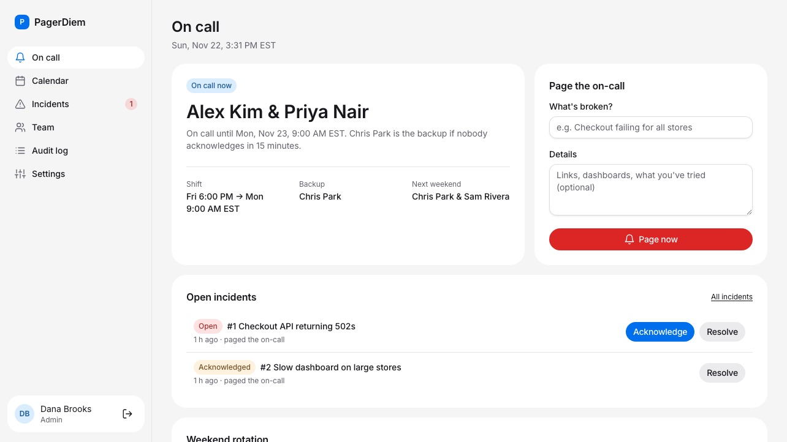
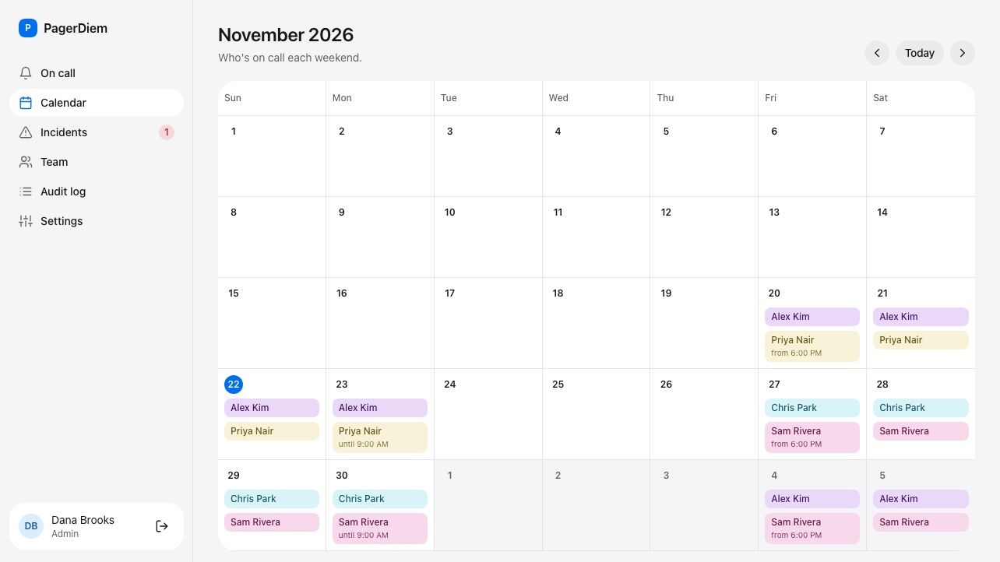
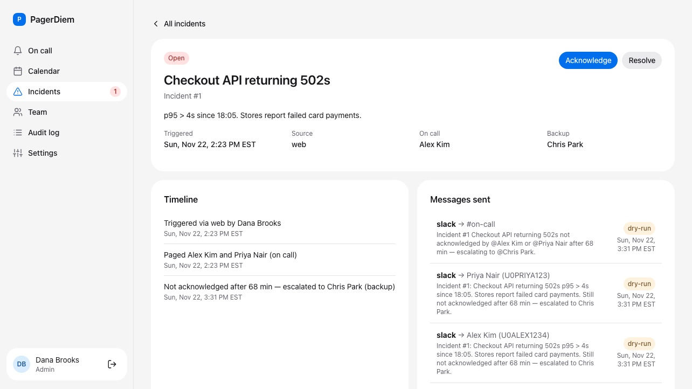

Weekend on-call,
without the enterprise bill.
On-prem on-call with no subscription: a fair rotation, Slack paging with escalation, a shared calendar and sign-in locked to your Google Workspace. One Node.js process, MIT licensed, and no cost when your team is over 100 people.

Pay for the server, not the seats
Most paging tools bill per person, per month. PagerDiem is software you run yourself.
On-prem
Run it on your own servers or in your own cloud account. One Docker image and one PostgreSQL database; a SQLite file works for a quick try. Your incident data never leaves your network.
No subscription
MIT licensed. No plan to pick, no trial that ends, no sales call, nothing to renew.
No cost past 100 people
There are no seats to count. Ten engineers or a thousand, PagerDiem itself costs nothing.
What it does
The parts of on-call a team actually uses. PostgreSQL underneath, one Node.js process on top.
Fair rotation, your days
People take turns so everyone gets the same share. Two on the weekend by default; admins choose the days and how many people each needs.
Slack paging
Page from the web, /page in Slack or the API. On-call people get a DM with Acknowledge and Resolve buttons.
Self-service
Add yourself to any weekend or remove yourself. Weekends below target are flagged “needs cover”.
Swap with undo
Take someone's spot from the calendar. Ten seconds to undo before anyone is notified.
Escalation
Re-page every 5 minutes, page the backup at 15, @channel at 30, and keep going until someone acknowledges.
Calendar and audit log
Month view, a Google Calendar feed, and a public log of every add, remove and swap.
Your team only
Google sign-in restricted to your Workspace domain. Slack requests limited to your workspace.
Roles
Engineers go on call. Non-technical teammates can watch and raise an alert, and are never paged.
Ask an AI, if you want to
Off by default. Type /ping checkout is failing in Slack and an AI looks into it and replies in a thread with what it thinks is wrong and what to do. Bring your own Claude API key and your own instructions.
Set up in minutes
One script starts PostgreSQL in Docker, asks a few questions and writes your settings. Your team's days, hours and sign-in domain are plain settings, not code.
When nobody answers
An incident keeps getting louder until a person takes it.
- 0 minEveryone on call gets a DM, and the channel is told.
- Every 5 minRe-page the people on call until someone acknowledges.
- 15 minPage the backup: the first person on the next weekend.
- 30 min
@channel, then keep paging everyone every 5 minutes.
Automatic paging stops after 24 hours. A weekend with nobody on call pages the admins, and weekday alerts go to the channel with a reminder every 30 minutes.
See it working
Real screens from a running instance.



Deploy it
Run exactly one instance; the scheduler lives inside the web process.
Render + Neon + Slack
Docker web service on Render, Postgres on Neon, plus the Slack app and Google sign-in. About 30 minutes.
Read the Render guideAWS: ECS Fargate + RDS
Always-on task behind an ALB, managed Postgres, secrets in Secrets Manager, logs in CloudWatch.
Read the AWS guideOr try it locally in a minute
The setup script starts PostgreSQL in Docker, asks for your email domain, time zone and on-call days, makes the secrets for you, and installs everything.
$ git clone https://github.com/PerDiemInc/pagerdiem && cd pagerdiem
$ ./init.sh # a few questions, starts PostgreSQL in Docker, writes .env
$ npm start # http://localhost:3000 (Slack runs in dry-run until you add keys)